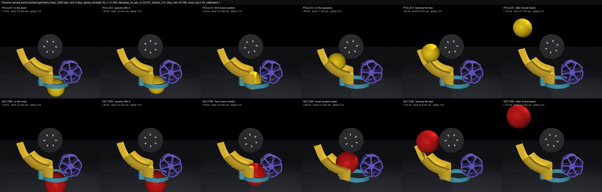
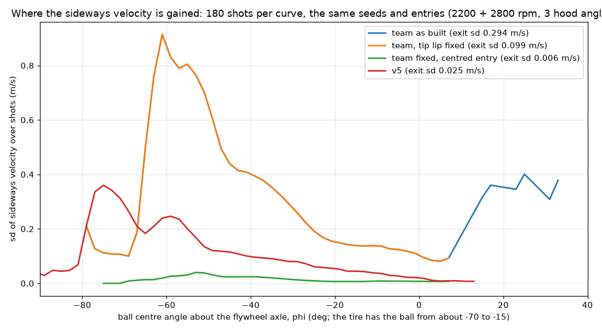
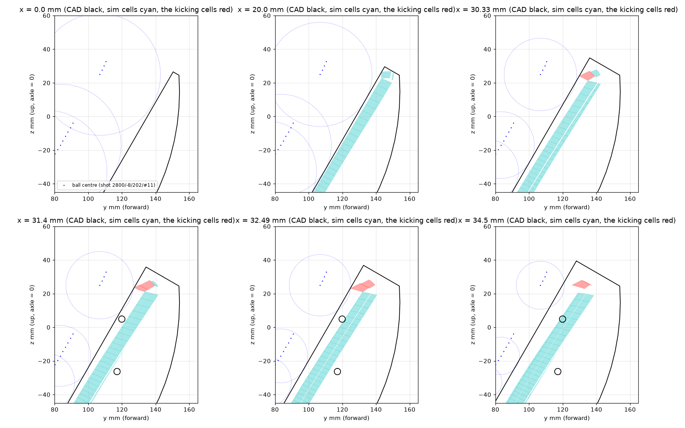

Turret comparison
v5 is the best of the three. On the shots all three can reach it lands about 99 % of POLLEN, the passive turret 97-99 % and the team turret 92-96 %, and it is the steadiest shot to shot (exit speed spread 0.3 %, against 1.4 % and 1.8 %). Only v5 and the passive turret shoot NECTAR.
The passive turret cannot fire a fast mixed burst. Fed back to back, a 4-ball mixed burst takes about half a second but only 44 % of its balls land, and no ball fired right after a NECTAR lands: each NECTAR takes 15 % off the wheel speed and the wheel cannot recover in time. No shot position reaches 90 %. v5's fastest mixed burst takes 1.3 s and lands 81 %. At the robot's real feed gaps v5 lands 96 % of mixed balls and the passive turret 89-90 %.
The team turret is lighter (1.27 vs 3.32 kg) and on the robot today. v5 can be built from tomorrow (build pack linked).
At a glance
All numbers sim. Showing the robot's own loop (Meet 1 code). Same random ball feed, same seeds and the same scoring for every turret; hits only on shots every compared turret can reach.
| Team turret | v5 active | Passive sprung | |
|---|---|---|---|
| Single shots, POLLEN (11 still and 43 moving positions all three can reach) | |||
| Balls landing, robot still | 91.6 % | 98.8 % | 97.4 % |
| Balls landing, robot moving (up to 0.6 m/s) | 95.3 % | 99.7 % | 99.0 % |
| Exit speed spread (1 sd) | 1.83 % | 0.30 % | 1.40 % |
| Up-down spread (1 sd) | 0.80 deg | 0.67 deg | 0.58 deg |
| Sideways spread (1 sd) | 2.97 deg | 0.58 deg | 1.64 deg |
| Aiming error of its calibration, speed / up-down (rms) | 1.67 % / 0.62 deg | 0.31 % / 0.55 deg | 0.96 % / 0.56 deg |
| Single shots, NECTAR (20 still and 86 moving positions v5 and the passive turret can reach) | |||
| Balls landing, still / moving | POLLEN only | 99.8 % / 99.3 % | 100.0 % / 100.0 % |
| Exit speed spread (1 sd) | POLLEN only | 0.27 % | 0.40 % |
| Bursts of 4 | |||
| 4 POLLEN, robot code, Meet 1 feed gaps: balls landing (of 160) | 151 | 154 | 149 |
| Fastest 4 POLLEN with 95 % landing, targets A-C | 0.48 s | 0.40 s | 0.27 s |
| Same, all 4 targets (D has a tight speed window) | 0.60 s | not reached | 0.60 s |
| Mixed POLLEN + NECTAR at the Meet 1 feed gaps: balls landing, time | POLLEN only | 96 % in 1.70 s | 89 % in 1.49 s |
| Mixed, fed back to back: balls landing, time (passive at 0.16 s gaps; v5 as fast as its hood allows) | POLLEN only | 81 % in 1.27 s | 44 % in 0.49 s |
| Flywheel | |||
| Wheel speed lost per POLLEN | 10.3 % | 4.0 % | 2.9 % |
| Wheel speed lost per NECTAR | POLLEN only | 8.7 % | 15.4 % |
| Back within 2 % after a POLLEN | 0.21 s | 0.19 s | 0.12 s |
| Back within 2 % after a NECTAR | POLLEN only | 0.36 s | 0.57 s |
| Hardware | |||
| Exit-angle reach | about 61-79 deg | about 55-89 deg | about 55-89 deg |
| Squeeze on the average POLLEN (72.53 mm, measured) | 3.59 mm (CAD) | 2.23 mm (CAD) | 1.06 mm (sim; the spring sets it) |
| Jams in the calibration grid | 1 of 389 | 3 of 699 | 3 of 699 |
| Servos | 1 (exit angle) | 1 (exit angle + ball type) | 1 (exit angle) |
| Mass (prints at 1.0 g/cm3) | 1.27 kg | 3.32 kg (2 discs: 3.02) | not modelled |
| Status | on the robot today | build pack ready | benchmark only (uses springs) |
Can the passive turret fire a mixed burst in half a second?
No, not in any scenario we tested. The case for a passive turret is that nothing moves between balls, so a mixed burst could go through in about half a second. We fed 4-ball bursts back to back, at fixed gaps from 0.35 s down to as fast as the entry clears, with one setting for both balls. Every scored shot position both balls can reach (103 positions, robot still and moving), all 14 mixed orders, both speed loops: 17,304 bursts.
Robot's own loop. Hover a point for its numbers; the table below holds the same data (and switches loop). A ball lands when its exit speed and up-down angle are inside that position's window, as for every burst number on this page; adding the sideways window changes these by under 1 point.
| Feed gap | Burst time | Mixed: balls landing | Ball right after a NECTAR | POLLEN only | NECTAR only | Positions where 90 % land (of 103) |
|---|---|---|---|---|---|---|
| as fast as the entry clears | 0.28 s | 41 % | 0 % | 92 % | 25 % | 0 |
| 0.08 s | 0.29 s | 42 % | 0 % | 91 % | 25 % | 0 |
| 0.12 s | 0.38 s | 43 % | 0 % | 95 % | 25 % | 0 |
| 0.16 s | 0.49 s | 44 % | 0 % | 97 % | 25 % | 0 |
| 0.25 s | 0.76 s | 53 % | 2 % | 98 % | 25 % | 0 |
| 0.35 s | 1.05 s | 68 % | 24 % | 99 % | 30 % | 0 |
| v5, fastest it can (waits for its hood) | 1.27 s | 81 % | 63 % | - | - | 7 |
Passive at 0.16 s gaps (robot loop), by ball in the burst: 1st 97 %, 2nd 48 %, 3rd 20 %, 4th 9 % landing; median exit speed off -0.1 %, -7.0 %, -10.2 %, -14.6 %. Robot still 42 %, moving 44 %. Best position 50 %, worst 0 %. Adding the sideways window: 43 %.
Why: the wheel's stored energy, not the hood. The first ball lands 97 % of the time. Each NECTAR then takes 15 % off the wheel speed (a POLLEN 3 %), the motor needs about 0.6 s to bring it back within 2 %, and every ball fed sooner leaves too slow. One ball type at a time shows the split: POLLEN alone, fed back to back, lands 97 % at 0.16 s gaps (a 0.48 s burst), while NECTAR alone lands only its first ball (25 %) at every gap up to 0.25 s.
Giving the passive turret its best shot
Two design levers set this: a heavier flywheel (less speed lost per ball) and a hood stop that squeezes NECTAR less. Today a NECTAR pushes the hood onto its 16.8 mm stop and is squeezed 3.5 mm, against 2.7 mm in v5. Each variant was recalibrated, then given the same back-to-back bursts in all 103 positions.
The design-lever runs (heavier flywheel, opened hood stop) are still running on backhouse.
Details
How the comparison is fair
- Same ball feed: every shot starts at a random point in the bore (up to touching its wall) with a random speed of 0.5-2 m/s and up to 10 deg of tilt (ranges guessed), the same draws in the same order for every turret. No transfer model (Ben: it will change).
- Same robot code: the speed loop is exactly the Meet 1 TeleOp's (RUN_USING_ENCODER, PIDF 160 / 0 / 0 / 15.2 x 12 / battery volts, setVelocity, no speed check). Our improved loop is the switch.
- Same bursts: 4 balls, fed the robot's way (hold Y: transfer and intakes at full power), with the gaps measured from the Meet 1 match logs (47 gaps, median 0.31 s).
- Same shots: hits only on the positions every compared turret can reach, so the team turret's high lowest angle (about 61 deg) is not held against it.
- Same seeds and the same scoring (the shot study's windows for zones 1-2, robot still and moving up to 0.6 m/s).
- v5 and the passive turret: the bore is continued 100 mm below the ring (the real turret has the 3208 gear bore and the spigot there) and the NECTAR entry disc is 3.6 mm (its real play in the 98 mm ring). The two fastest-POLLEN-burst rows use the first fair run of v5, without the extension.
Bursts in detail (team turret and v5)
| Position (target) | Team: landing | v5: landing | First exit to last, mean (max) |
|---|---|---|---|
| A (5.83 m/s, 65 deg) | 40 of 40 | 40 of 40 | 1.43 s (2.61) |
| B (5.48 m/s, 67.5 deg) | 39 of 40 | 40 of 40 | 1.33 s (2.46) |
| C (5.23 m/s, 75 deg) | 38 of 40 | 40 of 40 | 0.89 s (2.51) |
| D (5.45 m/s, 72.5 deg, tight 2.8 % speed window) | 34 of 40 | 31 of 40 | 1.15 s (1.75) |
| Ball in the burst (position A) | Team: speed off / spread | v5: speed off / spread |
|---|---|---|
| 1 | +0.46 % / 1.19 % | -0.07 % / 0.32 % |
| 2 | -0.23 % / 1.44 % | -0.81 % / 0.78 % |
| 3 | -1.00 % / 1.53 % | -1.16 % / 1.24 % |
| 4 | -0.73 % / 2.04 % | -1.16 % / 0.87 % |
First exit to last follows the measured feed gaps, so it is the same for both turrets. Position D has a tight speed window.
Mixed bursts at the robot feed gaps (v5 and passive, both balls)
| Both balls, same protocol (robot loop / ours) | v5 | Passive sprung | |
|---|---|---|---|
| POLLEN hits, still / moving (n 11 / 43) | 98.8 %, 99.7 % / 98.8 %, 99.6 % | 97.4 %, 99.0 % / 98.1 %, 99.4 % | sim |
| NECTAR hits, still / moving (n 20 / 86) | 99.8 %, 99.3 % / 99.7 %, 99.1 % | 100.0 %, 100.0 % / 100.0 %, 100.0 % | sim |
| POLLEN spread: speed, elevation, sideways | 0.30 %, 0.67, 0.58 deg / 0.31 %, 0.68, 0.70 deg | 1.40 %, 0.58, 1.64 deg / 1.31 %, 0.61, 1.83 deg | sim |
| NECTAR spread: speed, elevation, sideways | 0.27 %, 0.46, 0.16 deg / 0.26 %, 0.49, 0.16 deg | 0.40 %, 0.29, 0.11 deg / 0.38 %, 0.32, 0.15 deg | sim |
| Wheel dip per ball, POLLEN / NECTAR (true wheel, robot loop; median at HIVE speeds 2200-2800 rpm, all exit angles; the disc study below is one 2500 rpm setting) | 4.0 / 8.7 % | 2.9 / 15.4 % | sim |
| Back within 2 % after a NECTAR | 0.36 s / 0.25 s | 0.57 s / 0.47 s | sim |
| Squeeze, median: POLLEN / NECTAR | 2.31 / 2.67 mm / 2.32 / 2.67 mm | 1.06 / 3.55 mm / 1.07 / 3.56 mm | sim |
| Jams, spread shots POLLEN / NECTAR (of 450 each, includes 1600 rpm) | 3 / 8 / 3 / 5 | 1 / 8 / 2 / 3 | sim |
| Robot-code POLLEN bursts in window (of 160) | 154 / 159 | 149 / 149 | sim |
| MIXED 4-ball bursts, 14 orders x 4 positions x 2: balls in window (of 448) | 430 (96.0 %) / 431 (96.2 %) | 399 (89.1 %) / 404 (90.2 %) | sim |
| Same: POLLEN / NECTAR in window | 100 / 92 % / 100 / 93 % | 99 / 79 % / 100 / 81 % | sim |
| Same: jams | 0 / 0 | 0 / 0 | sim |
| Same: first exit to last, median (p90) | 1.70 (2.65) s / 1.69 (2.62) s | 1.49 (2.54) s / 1.64 (2.61) s | sim |
| Same: wait for the turret after a ball-type change, median (mean) | 0.31 (0.28) / 0.31 (0.28) s | 0.02 (0.18) / 0.17 (0.25) s | sim |
| Same: NECTAR right behind a NECTAR, speed off (median) | -1.7 / -0.8 % | -5.7 / -5.2 % | sim |
| Passive at ONE shared setting for both balls (no change between balls) | n/a (v5 must move its hood) | 333 (74.3 %), 1.19 s, 0 jams / 334 (74.6 %) | sim |
v5 waits about 0.3 s for its hood after a ball-type change, then almost every ball lands. The passive turret barely waits, but a NECTAR right behind a NECTAR leaves about 5.5 % slow and misses: 41-42 of its 44-49 misses are that. With one shared setting the POLLEN right after a NECTAR misses too (74 % land). A first run of these showed false jams from a bench bug (a ball fed 1 ms behind a waiting one); fixed and rerun: 0 jams for both.
The passive turret: geometry, spring options and the optimum
Winner: turret v4's one-hood geometry on a sprung slide (the v4p fork). Of the geometries we have, it is the only one where the ball itself pushes the hood open while one servo keeps the exit angle. The team's older passive design (3 parallel slots per plate, ~20 mm of radial travel) is the same kind of mechanism, but its first draft (variant team_turret) shot POLLEN at 2.6-2.8 m/s with 17-19 % speed spread and jammed (sim). v5 cannot be made passive: every v5 hood face and joint turns about the flywheel axle, so a spring there never opens the gap (a NECTAR fed into v5 held in POLLEN mode jammed 8 of 8).
Spring options and the optimum
| Spring option (differential evolution, 24 evaluations x 90 shots, fair entry, robot loop) | Best parameters | Score (search) | Score, fresh seeds | Hits | Mixed bursts at one setting |
|---|---|---|---|---|---|
| Near-constant force (default, calibrated) | 12.3 N, damping 25 N s/m, stop 16.8 mm | 0.898 | 0.876 | 0.898 | 0.899 |
| Falling two-stage | 27.9 N falling to 7.0 N over 1.26 mm, then +0.48 N/mm; damping 56; stop 18.7 | 0.850 | 0.840 | 0.909 | 0.792 |
| Linear | 21.1 N + 0.92 N/mm, damping 10, stop 16.8 | 0.804 | 0.833 | 0.874 | 0.757 |
Score = half hits + half the share of mixed-burst balls in the window at ONE shared setting, minus penalties (jams, squeeze outside 1-3 mm POLLEN / 1-4 mm NECTAR, peak over 7 mm, slow hood return). Hits in the search use a guessed calibration error (0.35 % / 0.7 deg); the benchmark below uses the real calibration. "Fresh seeds" re-measures each optimum on seeds the search never saw: near-constant stays best. Why a weak spring wins: both balls then leave at about the same speed from one setting, so mixed bursts need little change between balls. The limit is the 1 mm floor of our 1-3 mm POLLEN squeeze target (the optimum sits on it). Sensitivity (near-constant, fresh seeds, each parameter moved by 20 % of its range): sharp only in the hold force (5 N: 0.80, 29 N: 0.69); flat in damping (13: 0.88, 37: 0.87), stop (16.1 mm: 0.85, 17.4: 0.86) and sprung mass (0.15 kg: 0.89, 0.40: 0.86, 0.54: 0.85). The two-stage spring was also sharp in the mass (0.54 kg: 0.62); the near-constant one is not.

The optimum spring at 2500 rpm: POLLEN lifts the hood 2-4 mm; NECTAR pushes it to its 16.8 mm stop and it is back on its seat about 50 ms after the ball leaves.
What causes the team turret's side error
Mostly a sim bug, now fixed (high confidence). Both turrets use the same tire (Hogback 96, 23.8 vs 24.0 mm wide), and the tire gives only about 4 % of the sideways variance (sim). The team turret's sim widens its trough (1.1 x the ball radius) so the rigid sim ball does not jam, but the builder missed the hood's last 1.5 deg at the tip: the outer wall cells there stayed on the CAD wall and formed a lip up to 10 mm into the widened channel. A leaving ball hit it in 108 of 180 shots and got up to 1.1 m/s sideways in 1.7 ms. Fixed (builder flag TIP_FIX), recalibrated, and installed in the testbench; every team number on this page is the fixed one.
The remaining ~3 deg is real in the model (less sure of its size): nothing centres the ball before the squeeze in the team turret, so an off-centre or tilted entry carries through to the exit. v5's squishy wheel and ring centre the ball first. Its size depends on the guessed entry spread. Carrying the side panels' 75 mm channel down into the bore as two flat walls cut it to 1.7 deg in one quick run.
| Sideways velocity spread along the path (sim, 180 shots, same entries) | Team as first built | Team fixed | v5 |
|---|---|---|---|
| Drawn at entry | 0.087 m/s | 0.087 | 0.087 |
| First tire contact | 0.078 | 0.078 | 0.040 |
| Last tire contact | 0.091 | 0.091 | 0.023 |
| Exit | 0.294 | 0.099 | 0.025 |
| One change at a time (sim, sideways velocity spread) | m/s |
|---|---|
| As first built (with the lip) | 0.268 (9.3 deg) |
| Lip fixed | 0.095 (3.0 deg) |
| Fixed, ball centred with no tilt | 0.005 (0.1 deg) |
| Fixed, side offset only / tilt only | 0.091 / 0.078 |
| Fixed, no side panels / no fixed lower hood piece | 0.085 / 0.128 |
| Fixed, trough 1.02 / 1.05 x the ball radius | 0.088 / 0.061 (the exact CAD trough jams the rigid sim ball) |
| Fixed, contact cells 2x finer / 2x coarser / deeper / pushed out (sim construction checks) | 0.097 / 0.106 / same / same |
| Fixed + 75 mm side guides down into the bore | 0.067 (1.7 deg) |

Where the sideways spread is gained along the ball's path. The blue jump past +7 deg is the lip at the tip.

Sections at the hood tip: CAD in black, sim cells in cyan, the lip cells that kicked the ball in red.
v5: side stiffness and 2 vs 4 steel discs
The axles do not stop the side plates swaying, so each plate now has a printed buttress (built into the pack). Each axle sits in one ball bearing per plate, which passes almost no bending, so in sway the axles just move with the plates. The room before parts touch sideways is only about 0.3 mm (the NECTAR tooth's edge on its support, the POLLEN side teeth inside the fixed NECTAR teeth), not the 0.75 mm first quoted. A cross tie between the plates has nowhere to go (hood, ball path, squishy, motor and servo fill the space) and would sway with them anyway, so each plate is tied to the base piece instead: a printed buttress, part of the base piece, with 2 x M4 x 30 per plate. No new parts; base piece +57 g and +1.6 h of printing. All locked-geometry checks pass.
| Side stiffness (derived, beam model) | N/mm | Sway at 1 g (22 N) |
|---|---|---|
| Before: plates alone, axles as pins | 23.8 | 0.93 mm (room 0.3 mm) |
| Before, axles clamped rigid (upper bound no bearing reaches) | 126.9 | 0.17 mm |
| After: buttresses, axles as pins | 121.1 | 0.18 mm |
Two steel discs work in the sim: spin-up drops about 45 % and the turret loses 304 g; bursts, spreads and hits are the same or slightly better. The cost is a 65-70 % deeper dip per ball, so anything on the real robot that varies the dip (ball wear, the squishy's grip) matters more. Same shaft and spacers; one disc per side.
| v5, sim, robot loop / ours | 4 discs | 2 discs |
|---|---|---|
| Flywheel inertia (derived) | 7.71e-4 kg m2 | 4.41e-4 (-43 %) |
| Spin-up from rest to 2500 rpm (within 1 %) | 3.00 / 2.38 s | 1.68 / 1.37 s |
| Spin-up from rest to 3500 rpm | 4.34 / 4.19 s | 2.48 / 2.42 s |
| POLLEN dip per ball | 4.0 % | 6.7 % |
| POLLEN back within 2 % / 0.5 % | 0.19 / 0.14 s; 0.47 / 0.30 s | 0.17 / 0.13 s; 0.33 / 0.19 s |
| NECTAR dip at 2500 rpm, back within 0.5 % | 6.2 %, 0.57 / 0.25 s | 10.2 %, 0.38 / 0.23 s |
| 4-ball POLLEN bursts (robot code, Meet 1 gaps), balls in window | 151 / 153 of 160 | 158 / 150 of 160 |
| Speed drift over a 4-ball burst | robot 0 to -1.4 %, ours within 0.4 % | robot 0 to -0.9 %, ours within 0.3 % |
| Mixed 4-ball bursts (14 orders x 2), first exit to last | 1.37 / 1.43 s | 1.32 / 1.40 s |
| Spread at HIVE speeds (speed / elevation / sideways) | 0.29 % / 0.61 / 0.61 deg | 0.30 % / 0.60 / 0.53 deg |
| Hits on common states, still / moving | 98.2 / 99.3 % | 98.3 / 99.4 % |
The mixed-burst runs used 2 bursts per order and quicker calibrations (2 shots a point). One 4-disc cell (99 of 112) was a fixed -1.2 deg NECTAR calibration bias at that target, not burst behaviour. Source: out/turret_cad/v5/build_pack/disc/disc_report.json, sway/.
Sim vs the real robot (team turret)
| Robot (measured) | Sim | |
|---|---|---|
| Exit at 2500 rpm, hood on its stop (servo 0.88) | 5.445 m/s, 62.30 deg (2 shots) | 5.344 m/s, 62.95 deg |
| Wheel speed lost per ball | 7-18 %, median 9.1 % (39 balls) | 8.8 % (hub reading) |
| Back within 2 % | 0.29-0.33 s (under an older loop) | 0.22 s |
| Exit degrees per hood-servo unit | 121 (fit to the team's hand-tuned table) | 137 (servo travel guessed) |
These sim numbers are from the first build, before the tip-lip fix; the fixed turret exits about 2.2 % faster and 1.4 deg flatter (sim), so the 2500 rpm check moves to roughly 5.46 m/s and 61.5 deg (derived, not rerun).
v5 build pack
Open the build pack. Day 1: cut 11 plates (1/4 in) and start 6 prints (27.9 h on one printer, about 13 h on four; the base piece is the longest). v5 bolts into 6 of the 8 gear holes the team's deck uses, and a printed sleeve brings the bore down to where the transfer delivers balls today. To order: 10 x 6801-2RS bearings (needed on day 2), 2 x HTD 3M 444 mm belts, optionally the aluminium 25T pulley (a printed one is sliced). About $55-90 (guessed).
Not verified
- Everything except the Meet 1 feed gaps and the team turret's anchor shots is sim (see the note at the top). The team turret's real sideways spread has never been measured; about 20 shots at one setting at a wall would settle it.
- The ball feed ranges (speed, tilt, start point) are guesses.
- The team turret's trough is opened to 1.1 x the ball radius in the sim (the CAD is 0.27 mm tighter than the ball and the rigid sim ball jams).
- The hood servo's travel per unit is guessed (270 deg). The flywheel's fitted inertia is 3.5 x what the team turret's CAD parts give; not explained.
- The passive turret is contact geometry only: its sprung mass (0.25 kg) is a guess, its slide has no friction in the sim, and why its NECTAR costs the wheel so much more than v5's is only partly traced (a bigger squeeze on its stop).
- The heavier-flywheel variants scale the wheel's inertia only; the motor, belt and loop gains are unchanged, and the disc count is derived from the 2 vs 4 disc inertias.
- Side stiffness is a beam model with guessed printed-PETG stiffness. 2 discs vs 4 is sim only, on the 11-09 motor fit.
Sources
- Fair comparison (team, v5): out/turret_cad/team_pollen_turret/sim/side/runs/fx_fair_report.json, sim/side/NOTES.md
- Passive turret and v5 under the same protocol: out/turret_cad/passive/final/report.json, out/turret_cad/passive/NOTES.md
- Rush bursts: tools/passive_bench.mjs rush, tools/rush_states.py, tools/rush_report.py; out/turret_cad/passive/final/rush_report.json, design_report.json
- Fastest bursts: tools/gap_bursts.mjs, tools/gap_table.py. v5 build pack: out/turret_cad/v5/build_pack/ (PROGRESS.md)